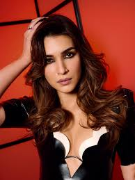

Kriti Sanon
-
Born:
27 July 1990 (age 35 years), New Delhi
- Parents: Rahul Sanon, Geeta Sanon
Career Highlight
- Tere Ishk Mein
- Teri Baaton Mein Aisa Uljha Jiya
- Do Patti
- Heropanti
- Crew
About
Kriti Sanon is an Indian actress who primarily works in Hindi films. She is a recipient of several accolades including a National Film Award and two Filmfare Awards. Sanon was featured in Forbes India's Celebrity 100 list of 2019.
